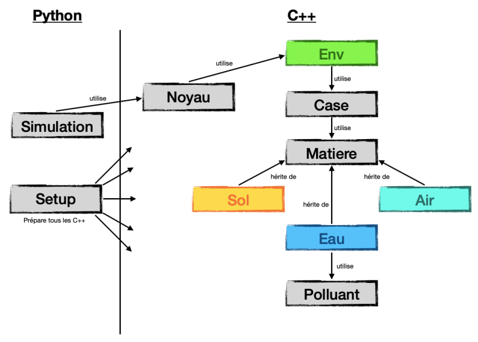
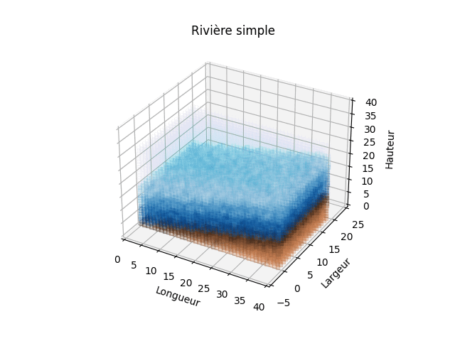
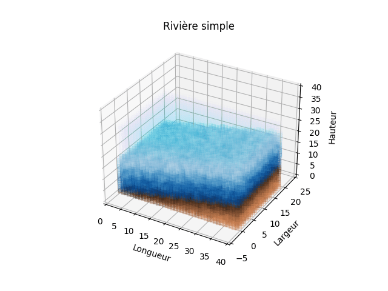
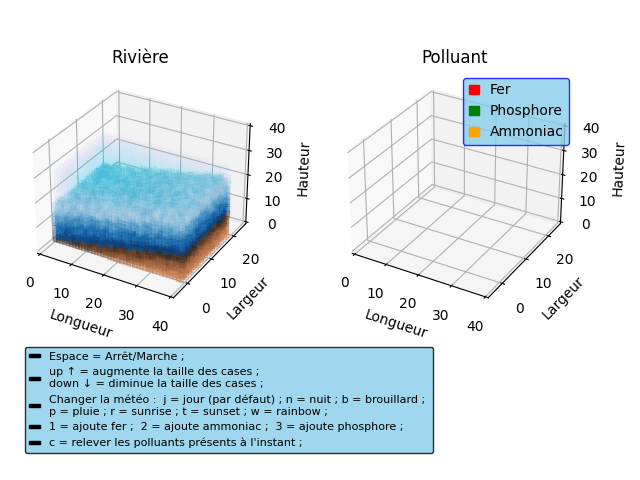

Simulation d'une rivière
Nicolas Ibrahim & Yanik Haas
• Introduction au projet
Nous avons réalisé ce projet dans le cadre du cours de programmation de deuxième
année de Bachelor en science et ingénierie de l'environnement à l'EPFL.
Nous avions comme objectif de créer un modèle au choix entre deux situations proposées, ou de réaliser un projet libre.
C'est cette dernière option que nous avons décidé de réaliser.
Nous sommes donc parti sur la modélisation en 3D d'une rivière. Nous voulions pouvoir observer une rivière en mouvement,
et pouvoir y incorporer différents phénomènes physiques.
Ce projet mettait en oeuvre une combinaison de deux langages, le python et le C. Cependant, nous avions des plans en tête
qui nécessitait des classes et une certaine hiérarchie entre elles. Avec l'accord du professeur, nous avons changé la partie C en C++,
qui permet ainsi, d'atteindre nos attentes.
Afin de facilité la lecture de notre code, et de comprendre son fonctionnement, nous avons réalisé un schéma représentant les différentes classes et fichiers
de notre projet et les liens qui les lient.

• Conception
Nous avions commencé par l'écriture d'un fichier csv afin de transférer nos valeurs de C++ au code python.
Cependant, nous avons rapidement remarqué que pour créer une rivière en mouvement, un nouveau
fichier csv devrait être renvoyé chaque pas de temps avec des nouvelles valeurs.
De plus, nous voulions récupérer des valeurs de python en C++ tel que le temps de la simulation.
C'est pourquoi, nous avons décidé d'abandonner le transfert de donnée à partir d'un fichier csv
et avons créé un module python permettant de transférer des valeurs de C++ à python et inversement.
Comme on peut le voir sur le schéma précédent, c'est le fichier setup.py qui s'occupe de compiler et installer le module.
Il faut donc build et install setup.py avant de pouvoir lancer la simulation. On peut ensuite run simulation.py
qui est le script de la simulation. Ce dernier permet de créer le graphique et de le faire
tourner en faisant appel aux valeur calculée en C++ via noyau qui est le module C++.
Avant de poursuivre, voici les trois commandes à écrire dans le terminal afin de lancer notre simulation. Une fois dans le dossier contenant les fichiers, écrire :
$ python3 setup.py build
$ python3 setup.py install --user
$ python3 simulation.py
De plus, nous n'avons pas crée de Makefile. À la place, nous avons directement changé la commande de construction dans notre éditeur de code.
La voici : g++ -Wall -o "Noyau" "Noyau.cc" "Env.cpp" "Matiere.cpp" "Case.cpp" "Air.cpp" "Eau.cpp" "Sol.cpp" "Polluant.cpp" -std=c++11 -lm
Maintenant que la partie python est présentée, voyons ce qu'il se passe du côté C++.
Nous avons donc le fichier Noyau.cc qui est le module C++. Il s'occupe du transfert des valeurs entre C++ et python, tout comme simulation.py
le fait en python.
Nous avons ensuite différentes classes en C++. Chacune de ces classes contient un fichier .hpp et un .cpp.
Les .hpp contiennent la classe avec ses attributs et le prototype de ses fonctions. Les .cpp contiennent
simplement les définitions des fonctions de la classe correspondante.
La classe principal de notre code C++ est Env. Cette classe englobe tout l'environnement de la rivière. Elle définit sa taille, ses caractéristiques, etc.
Elle contient notamment un tableau de cases qui fait l'objet d'une classe elle aussi.
La classe case représente les cellules de notre rivière. Chaque case de l'environnement contient différentes caractéristiques.
Afin de représenter le plus possible une situation réel, nous avons décidé que, conceptuellement, chaque case représente un carré de 1 mètre de côté.
Chaque attribut case a donc des coordonnées (X, Y et Z) et une matière. Nous avons choisi X pour la longueur de l'environnement, Y sa largeur et Z sa hauteur.
Nous venons de voir que chaque case possédait une matière, mais qu'est-ce qu'une matière ?
Matiere est la classe suivante. Cette classe est une classe virtuelle. Une classe virtuelle est une classe qui a une ou plusieurs sous-classes
qui vont hériter des attributs et fonctions de la classe virtuelle, soit Matiere. Comme Matiere est en haut de cette hiérarchie de classe, on l'appel aussi Super-Classe.
Matiere est donc la Super-classe de trois sous-classes : Eau, Sol et Air. La relation nécessaire pour implémenter une hiérarchie de ce type est la relation EST-UN.
En effet, l'eau est-une matière, tout comme le sol et l'air. Ces trois sous-classes possèdent donc toutes trois les caractéristiques héritées de Matiere
et peuvent se spécifier.
La dernière classe est Polluant. C'est la classe Eau qui peut où non posséder un polluant. Ce dernier peut être de différents types,
avoir un coefficient de dispersion différent, etc.
Pour résumé, nous avons un environnement qui contient un ensemble de cases. Chacune d'elles possèdent une matière qui peut-être de l'eau du sol ou de l'air.
Finalement, l'eau peut également avoir un polluant. Les graphiques sont réalisés dans Simulation à l'aide des données transférées par module python.
• Représentation
Notre premier objectif était de réaliser une rivière en trois dimensions. Avec la conception détaillée précédente, vous avez compris
que nous avons un ensemble de case qui représente notre environnement. Nous avons donc chercher un graphique qui représentait des cases,
et c'est comme cela que nous sommes arrivé à choisir un scatter plot. En serrant les points et en donnant certains paramètres adaptés,
nous sommes arrivés à un graphique en nuage de points qui ressemblait à ça :

À ce stade, il ne manquait plus qu'à mettre les cases en mouvement pour avoir notre base de rivière.
Cependant, il n'a pas été facile de coder le déplacement de l'eau. De nombreux facteurs étaient à prendre en compte.
Par exemple, le fait de bien supprimer l'eau qui sort du tableau, intégrer correctement celle qui arrive, gérer les transitions
lorsque le sol change de hauteur où encore faire en sorte que l'eau se déplace vraiment d'une case à une autre et non pas créer une
nouvelle case d'eau à chaque fois.
Finalement, nous avons réussi à réunir toutes ces conditions, et avons obtenu la rivière suivante :

Voici maintenant le résultat lorsque nous lançons la simulation :

En premier lieu, on peut voir que nous avons ajouté des légendes ainsi qu'un deuxième graphique qui semble vide.
En effet, il est vide, mais uniquement jusqu'à ce qu'on ajoute un polluant. Nous vous expliquons dans la prochaine section
les touches utiles afin de contrôler des éléments de la simulation, dont l'ajout d'un polluant.
Nous avons donc décidé d'ajouter un second graphique qui affiche uniquement le polluant. Les deux graphiques avances en même temps
et le polluant se trouve également sur le graphique de la rivière. Nous avons simplement ajouté ce graphique afin d'avoir une
meilleure vision sur l'évolution du polluant.
Voilà le résultat avec comme polluant du fer :
D'autres polluants sont disponibles, à vous de lancer la simulation pour les observers...
• La simulation
Différents réglages ont été mis en place afin de pouvoir faciliter la manipulation de la simulation de la meilleure manière possible.
Dans un premier temps, lorsque vous lancez la simulation, on vous demande d'entrer les dimensions de l'environnement que vous souhaitez.
Des valeurs types sont données en exemple, mais libre à vous de tester différentes compositions.
Une fois l'environnement crée, il est possible d'appuyer sur certaines touches du clavier afin de manipuler la simulation. Les légendes sont écrites sur la simulation,
mais voyons ici les effets détaillés.
Tout d'abord, la flèche en haut "up" permet d'augmenter la taille des cases. De la même manière, la flèche du bas "down" permet de la diminuer.
Jouer avec la taille des cases peut-être intéressant afin de visualiser plus facilement certains aspects de la simulation.
Vient ensuite la météo. Il est possible de changer la météo de la simulation avec des touches tel que p pour la pluie, b pour le brouillard,
n pour la nuit et d'autres à découvrir en simulation. j est le jour et correspond à la valeur par défaut.
Nous n'avons pas décidé d'explorer cette voie plus en détail, mis à part la couleur de l'air qui change.
Cependant, on pourrait imaginer différents effet de cette météo.
Par exemple la pluie sur la rivière peut créer des crues, le brouillard peut survenir suite à une certaine humidité, etc.
Un classique mais indispensable, il est possible de mettre pause à la simulation avec la touche espace du clavier.
La même touche est utilisée pour la remettre en action.
Ensuite, il est possible d'ajouter un polluant dans la rivière. Il y a trois type de polluant : le fer, le phosphore et l'ammoniac.
Afin d'en ajouter dans la rivière, les trois touches suivantes sont disponibles : 1, 2 et 3 respectivement. Cela aura pour effet
d'ajouter un polluant au début de la rivière. Il est ensuite possible d'observer son déplacement.
Nous avons mis un place un second graphique où le polluant est représenté tout seul, sans élément autour de lui.
Il est ainsi plus simple de suivre son évolution et son comportement.
Finalement, il est possible d'appuyer sur la touche c. Cette touche va permettre de générer un csv
avec les coordonnées des polluants présents dans la rivière, ainsi que son type et sa masse [kg]. De plus, il est affiché sur le terminal
la masse totale de chaque polluant présent à l'instant ou la touche c est pressée.
• Quelques concepts physiques
Toujours en utilisant le fait qu'une case de notre rivière représente 1 mètre carré, nous avons pu
utiliser diverses valeurs et divers calculs dont certains sont des formules physiques reconnues. Les voici, ainsi que les liens pour accéder à leur référence.
Pour la
vitesse de l'eau, nous avons utilisé la
formule de Manning Strickler.
Cette formule empirique permet d'estimer la vitesse d'un fluide dans une surface libre. De plus, nous avons fait en sorte que l'eau avance
vraiment à sa vitesse donnée. Nous avons pris en compte le fait qu'une case fait 1 mètre de long (conceptuellement) ainsi que le temps auquel la simulation avance.
Malheureusement, il est compliqué d'observer la vitesse réel car beaucoup de calcul son nécessaire dans un temps trop cours pour nos ordinateurs.
Ensuite, pour obtenir une
pente réel de rivière, nous avons trouver un fichier csv sur le site des
sitg.
Il y figure notamment la pente moyenne de différent fleuve/rivière genevois. Nous avons ensuite récupéré ces moyennes et fait une moyenne de ces dernières.
Nous obtenons donc une pente d'environ 8%, ce qui correspond à une pente moyenne d'un cours d'eau genevois.
En ce qui concerne la
propagation du polluant, nous avons utilisé une formule empirique située dans une thèse de doctorat disponible
ici.
(modèle unidimensionnel, page 49)
• Extensions
Malheureusement, il n'a pas été possible de réaliser toutes les idées qui nous sont passées par l'esprit à cause du manque de temps.
Cependant, nous continuerons à étendre cette simulation dans le futur. Nous avons construit un code relativement général, nous permettant d'ajouter
certaines caractéristiques sans devoir supprimer et recommencer une grande partie du code.
Voici quelques exemples d'extensions que nous voudrions apporter :
- Afin d'observer l'évolution des polluants, nous pensons à introduire des végétaux ou des microorganismes qui pourrait absorber certains de ces polluants.
En plus, créer un graphique en deux dimensions montrant la variation de polluant dans l'eau en fonction de la présence d'organismes.
- Dans la même optique d'élimination des polluants, nous pensons à modéliser une station d'épuration qui pourrait récolter le polluant à un endroit précis et le relâcher
plus loin, une fois les traitements suivant le polluant effectués.
- Si vous vous demandez encore pourquoi toutes les matières ont une vitesse, la réponse c'est maintenant. En ce qui concerne le sol, nous avons en tête
un phénomène d'érosion. Après un certains nombre de passage de l'eau sur une case de sol, cette dernière aurait une faible probabilité
de s'éroder et d'être emporter par le courant de l'eau. Voilà pourquoi le sol pourrait avoir une vitesse. En ce qui concerne le vent,
il est plus simple à l'imaginer avec une vitesse. Nous avons en tête une idée plus visuel qu'utile. Ça serait que si le vent en contact direct
avec le haut de la rivière atteint une certaine vitesse, cela pourrait créer une vague.
- Un dernier apport que nous avons déjà cité précédemment sont les effets de la météo. notamment l'augmentation de la hauteur de l'eau de la rivière
après un certain temps de pluie. Bien entendu, l'arrivée de l'arc-en-ciel après la pluie pour le côté réaliste.
Encore plein d'idée nous parcours l'esprit, mais ce sont les principales.
Toujours dans l'optique de créer une simulation réaliste, nous pourrions être bloqué par le fait que conceptuellement, nos cases carrées font 1 mètre de côté.
En effet, il faudrait une forte pluie pour augmenter la hauteur de l'eau de 1 mètre.
Nous avons donc également la possibilité de changer l'interprétation de la taille des cases
(par exemple qu'elles fassent 0,1 mètre au lieu de 1,0) et adapter les calculs nécessaires pour retrouver notre cohérence physique.